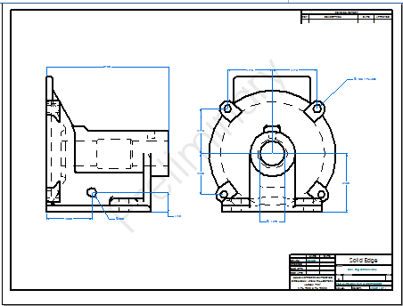

Options - Single Sheet per Page
This dialog box controls the positioning of a sheet when printing a single sheet per page to create a composite drawing.
- Center
-
Centers the print area or the sheet on the paper.
- Use printer clipping
-
Specifies that you want the printer to clip the defined clipping region. If you want to clip text or OLE objects such as Word or Excel documents, you should set this option. You should also use this option if you are printing detail views that extend past the clipping boundary.
- Detect portrait/landscape
-
Specifies that you want to detect if the paper orientation is set to portrait or landscape, and then to print using that orientation.
- Scale
-
Controls the sheet scale.
- Fit to printer margins
-
Scales the selected drawing sheet to fit the configured device printer paper.
- Manual scale
-
Specifies the scale value you want to use during printing. The value you type in the text box is the ratio of the paper to the design.
- Scale line widths
-
Scales line widths for printing. When set, the line widths scale down, but not up.
- Scale line types
-
Scales line types for printing. When set, the line types scale down, but not up.
- Print all colors as black (does not apply to linked/embedded files, images, or shaded drawing views)
-
Specifies that all Solid Edge graphics and text should be printed as black on a color printer. Foreign objects, such as Excel spreadsheets, that are linked or embedded, images, or shaded drawing views use their own display characteristics when printed.
- Include grid display on print
-
Prints the drawing grid on the sheet, when it is displayed in the draft document using the Show Grid command.
- Include watermarks on print
-
Prints watermarks that are shown on the drawing, for example:

This option applies to watermarks added to the draft document using the Watermark command, or to a text box converted to a watermark using the Set text box as watermark option on the Info tab (Text Box Properties dialog box).
How do I
Print a documentPrint to a file
Print an area
Print at a 1:1 scale
Print a composite drawing
Print to Adobe PDF
Change PDF printer properties
Learn more
Printing documentsUsing the Paper Print page
Printing composite drawings
Look up more details
Paper Print settings for draft documentsPaper Print settings for model documents
(Print) Options dialog box
Print Area dialog box
Options-Multiple Sheets per Page
Print Drawings - Select Sheets dialog box
Print Drawings - Select Documents dialog box
Preview dialog box